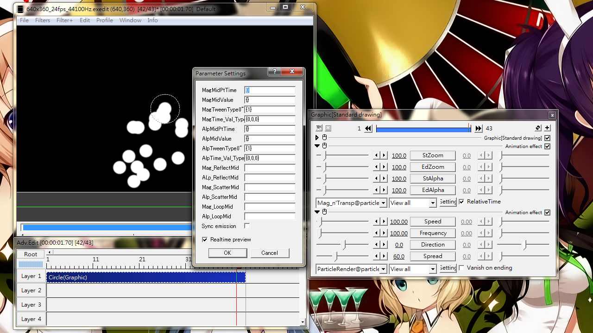

Fig07: setting panel for Mag_n'Transp@particle_ri_ver3
Magnification and Transparency
Provides flexible control to particles' magnification and transparency. Parameters for magnification starts with "Mag", those for transparency starts with "Alp" (stands for alpha).
Sliders
StZoom
Initial magnification when a particle is first emitted.
Overrides ParticleRender@particle_ri_ver3 setting
Affects FineAdjustment@particle_ri_ver3
EdZoom
Final magnification when a particle reaches its survival time.
Overrides ParticleRender@particle_ri_ver3 setting
Affects FineAdjustment@particle_ri_ver3
StAlpha
Initial transparency when a particle is first emitted.
Overrides ParticleRender@particle_ri_ver3 setting
Affects FineAdjustment@particle_ri_ver3
EdAlpha
Final transparency when a particle reaches survival time.
Overrides ParticleRender@particle_ri_ver3 setting
Affects FineAdjustment@particle_ri_ver3
Check box
RelativeTime
Checked: Time zero is when a particle is emitted.
Unchecked: Time zero is the object's starting point.
Setting dialog
(In the following, ___ can be replaced by either Mag or Alp)
>2: Repetitive change with this value number of times. For odd number, final value is the changed one. For even value, the final value is the initial one before changing.